Omnissa Horizon 8: Virtual Desktop Pools
This article details Horizon pool configuration for Virtual Desktops. RDS Farms and pools are detailed in a separate article at ../vmware-horizon-8-rds-farms-pools/.
Navigation
This post applies to all Horizon versions 2006 (8.0) and newer.
Change Log
- 2023 Jan 13 - Automated Full Clone Pool - Horizon 2212 lets you specify the OU.
- 2021 Mar 28 - new section for Automated Persistent Full Clones.
- 2021 Jan 10 - Instant Clones ESXi Maintenance - new Disable ParentVMs feature for VUM
- 2021 Jan 9 - updated screenshots for Horizon 2012 (8.1)
- 2020 Aug 14 - updated entire article for Horizon 2006 (8.0)
Non-Persistent - Instant Clones
All editions of Horizon 2006 and newer include Instant Clones so there is no need to use Composer. Composer is deprecated in Horizon 2006. Composer was removed from Horizon 2012 (8.1) and newer.
Notes on Instant Clones:
- The master VM snapshot is copied to every LUN containing instant clones. Composer does the same.
-
If you deploy 12+ VMs per host of the same pool, then "Parent" machines are created on each ESXi host for each datastore. These "parent" machines are powered on and consume CPU/Memory/Disk resources. If you have six hosts and three datastores containing instant clones, then Horizon creates 18 parent virtual machines. Composer does not need parent virtual machines.
- For lower density, Horizon 2006 and newer support Smart Provisioning, which eliminates the need for "Parent" machines. See the Smart Provisioning YouTube video for an overview.
- Horizon 2306 (8.10) and newer now default to no longer creating parent virtual machines.
- Horizon 2306 (8.10) and newer support Persistent Disks with dedicated Instant Clones. See Omnissa 93091 Guidelines for Persistent Disk Migration from Horizon 7 Environments to Horizon 8.
- An alternative is Microsoft FSLogix, or App Volumes Writable Volumes
- See Instant-Clone Desktop Pools at Omnissa Docs.
Infrastructure Prep
- Instant Clones in Horizon 2303 and newer require vSphere 7 or newer. vSphere 6.7 and older will not work.
-
Each desktop pool points to one vSphere cluster.
- See 2150348 Horizon 7 sizing limits and recommendations for maximum cluster size and maximum number of virtual machines per cluster.
-
Ensure vSwitch has sufficient ports for the new virtual desktops.
-
Instant Clones in Horizon 8.1 and newer support all port bindings, including ephemeral. Older versions of Horizon, including Horizon 7.x, require static port binding.
-
Ensure the VLAN has enough DHCP addresses for the desktop pool.
-
Lower the DHCP lease time too.
- DHCP should be highly available (e.g. Windows DHCP Failover)
- Enable DNS Scavenging.
- See 2005210 Unable to connect to linked clone pools after recomposing when using secure only dynamic updates with DNS to change permissions on DNS Zone so the virtual desktops can update their DNS records after a Push Image.
- KMS Licensing is required, preferably using Active Directory-based activation - MAK licensing (Omnissa Docs) is not supported until Horizon 2212 and newer.
- The virtual desktop pools will use the same hardware specs (e.g., vCPUs, memory size, network label, GPU) specified on the master virtual desktop. Adjust accordingly.
- The master image should be in the same vSphere cluster where the instant clone virtual desktops will be created.
- ESXi must be version 6 update 1 or newer
- Master VM must be version hardware version 11 or newer
- In Horizon Console, add Instant Clone Domain Accounts
- In Horizon Console, enable View Storage Accelerator on your vCenter connection.
- If you upgrade vCenter from version 6.5 or older to version 6.7 or later, then you must upgrade your ESXi hosts to version 6.7 or later at the same time. Afterwards, take a new snapshot of the master image and perform a push operation.
- Windows 11 - Omnissa says don’t add vTPM to the gold image. Instead add the vTPM when creating the Instant Clone pool or Full Clone pool. There are various methods of installing Windows 11 without a vTPM. See Omnissa KB article 85960 Horizon and Horizon Cloud readiness for Microsoft Windows 11.
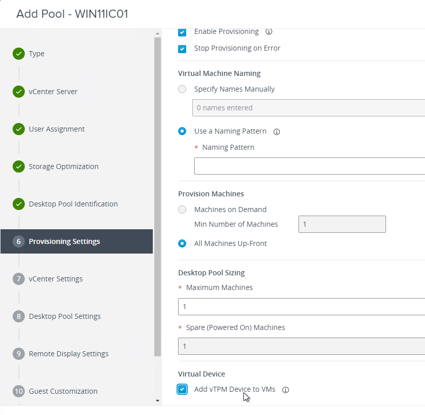
-
vTPM requires a Key Provider. vSphere 7 has a Native Key Provider that does not need any additional servers or licenses.
-
In vSphere Client, in Inventory, click the vCenter object. On the right, on the Configure tab, scroll down to Key Providers and add a Native Key Provider.

- After it’s added, select it and then click Back-up to activate it.


Disk space
-
One or more LUNs (datastores) for storage of the virtual desktops.
- See Horizon Configuration Maximums for maximum virtual machines per datastore.
-
By default, Replicas are copied to each LUN that contains virtual desktops.
-
It’s possible to place the Replica and the instant clones on separate LUNs. If you use a dedicated Replica LUN, then there is only one copy of the Replica no matter how many LUNs are used for storing virtual desktops.
- Note: NFS VAAI requires the Replica to be copied to each virtual desktop LUN.
-
.vswp files - Plan for disk space for memory swap and graphics memory overhead. If the master virtual desktop has 4 GB of RAM configured and if none of its memory is reserved then each linked clone will have a 4 GB .vswp file.
-
To reduce the size of the .vswp files, edit each virtual desktop and reserve its memory. Whatever memory is reserved will be subtracted from the .vswp file size.
- Instant Clone Delta disks - Delta disks start small whenever the virtual desktop boots and grow until the user logs off of the virtual desktop and it reboots.
Non-Persistent, Floating, Automatic, Instant Clone Desktop Pool
Master Image Preparation
Do the following on the master image that the virtual desktops will link to:
- Video Memory - shut down the master, Edit Settings (hardware) in vSphere client, expand Video card, and set video memory. More video memory means more client monitors. The maximum number of displays and maximum resolution of client monitors depends on the ESXi version, the Horizon version, and the Windows version with newest versions providing the greatest number of client monitors.
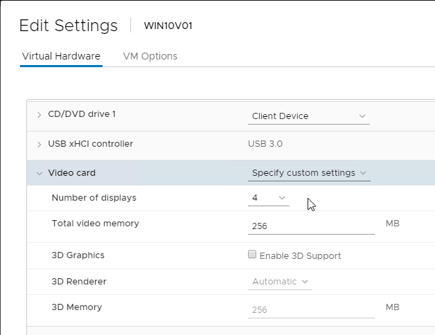
- DHCP - Make sure the master VM is configured for DHCP.
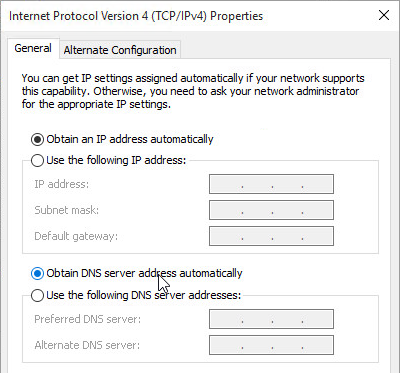
- Join domain - Join the master VM to the domain.
- Computer Group Policy - Make sure the Master VM is in the same OU as the Instant Clones so the Master VM will get the computer-level GPO settings. Run gpupdate on the master after moving the VM to the correct OU. New Instant Clones do not immediately refresh group policy so the group policy settings must already be applied to the master VM. See Omnissa 2150495 Computer-based Global Policy Objects (GPOs) that require a reboot to take effect are not applied on instant clones.
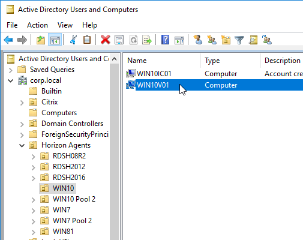
- KMS Licensing or Active Directory-Based Activation (recommended) is required.
- Snapshot - Shut down the master image and take a new snapshot.
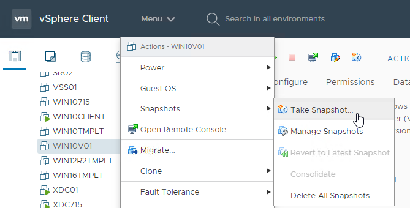
Floating Pool
Use Horizon Console to create an Instant Clone pool:
- Login to Horizon Console.
- On the left, under Inventory, click Desktops.
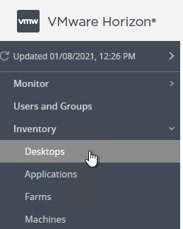
- On the right, if you select an existing pool, you can click Duplicate to copy the settings to a new pool.
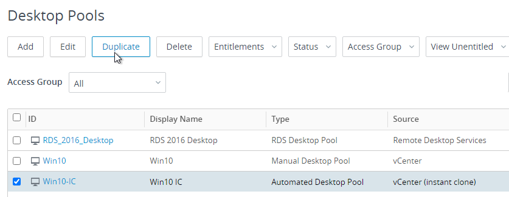
- On the right, click Add.
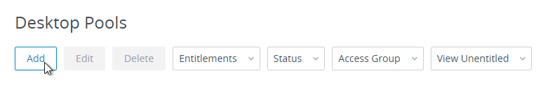
- In the Type page, select Automated desktop pool.
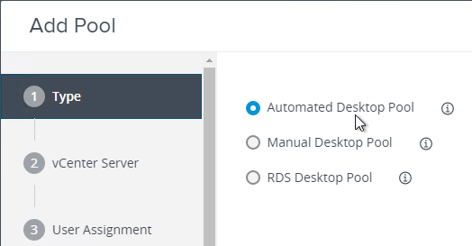
- In the vCenter Server page, select Instant Clone, select a vCenter server, and click Next. Notice that Composer is no longer an option.
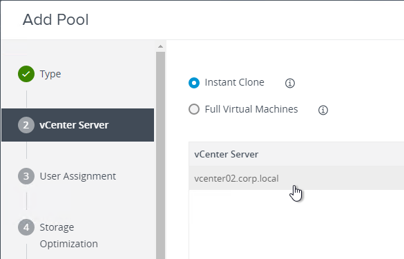
- In the User Assignment page, select Floating, and click Next.
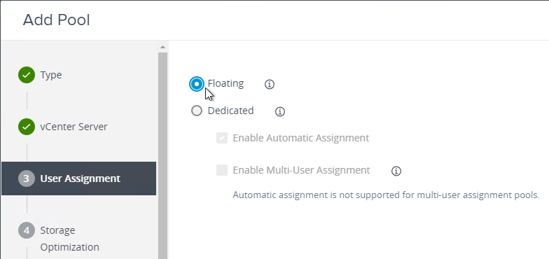
- In the Storage Optimization page, if you want to use storage tiering, check the box for Select separate datastores for replica and OS disk. Click Next.
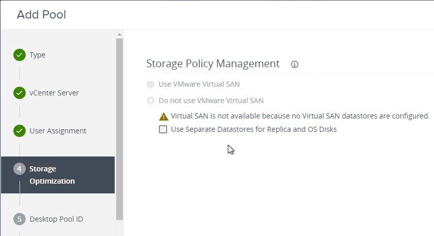
-
In the Desktop Pool Identification page, do the following:
- Give the pool a unique ID, which is not shown to the users. Horizon creates a vCenter VM folder with the same name as the Pool ID.
- Enter a Display name, which is shown to the users.
- If you intend to use Omnissa Access, then leave Access group set to /. Otherwise, if you intend to delegate administration of this pool, then select an Access group that the delegated administrators have been assigned to.
- Click Next.
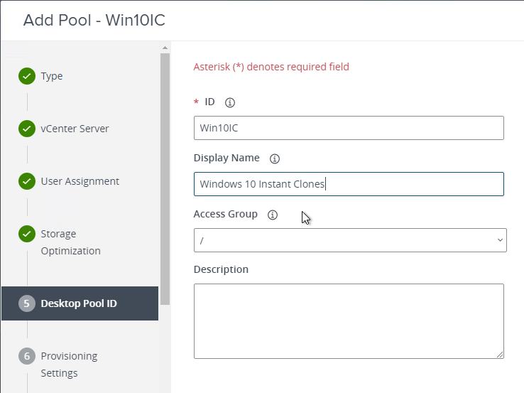
-
In the Provisioning Settings page, do the following:
-
In Virtual Machine Naming, enter a Naming Pattern. You can use {n:fixed=3} to specify the location for incremented numerals in the machine names. Make sure the naming pattern does not conflict with any existing machines. Remember, the maximum computer name length is 15 characters.
- Horizon 2103 (8.2) and newer let you Specify Names Manually instead of using a naming pattern.
- In Desktop Pool Sizing, enter the maximum number of desktops to create. Ensure that the DHCP scope has enough addresses for the Max number of desktops specified here. If your desktop pool size exceeds a single VLAN, then you can create multiple pools and combine them into a Cloud Pod Global Entitlement.
- Select Provision all machines up-front to create all of the machines now.
- Or select Provision machines on demand, which tells Horizon to create the machines (up to the maximum) as users connect.
- If you're not creating all machines up-front, then specify the Number of spare (powered on) machines. As users connect, Horizon creates more machines to try to keep this number of spare machines running and waiting for a new connection.
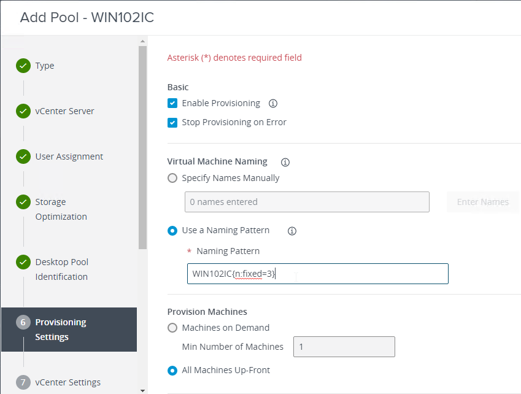
- If Windows 11, consider checking the box to Add vTPM Device to VMs.
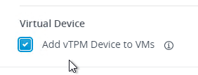
- Click Next.
- In the vCenter Settings page, most of these are self-explanatory. Click Browse next to each option and make your selection.
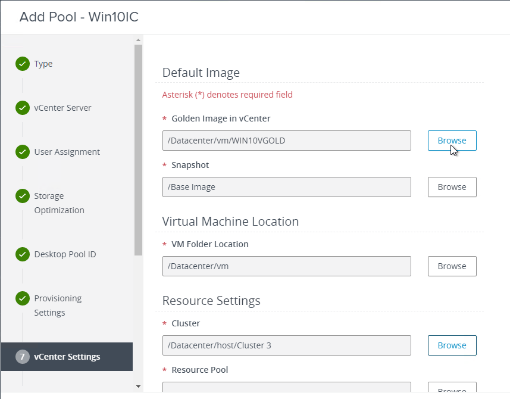
- If the Golden Image VM (aka Parent VM or Master VM) is not showing up in the list, then check the box next to Show all parent VMs and click the … next to the VM to see the issue.
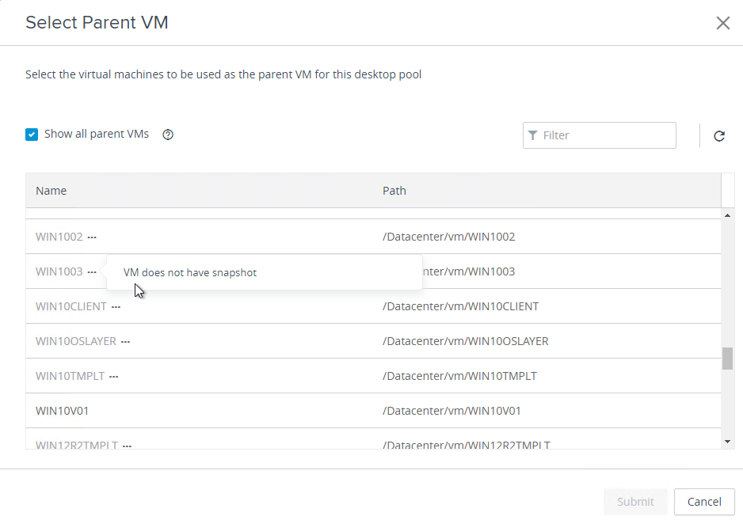
- Instant Clones monitors/resolution – the number of monitors configured on the Master Image (snapshot) is displayed. If not correct, delete the snapshot, edit the master VM’s Hardware Settings, expand video card, make your desired changes, and take another snapshot.
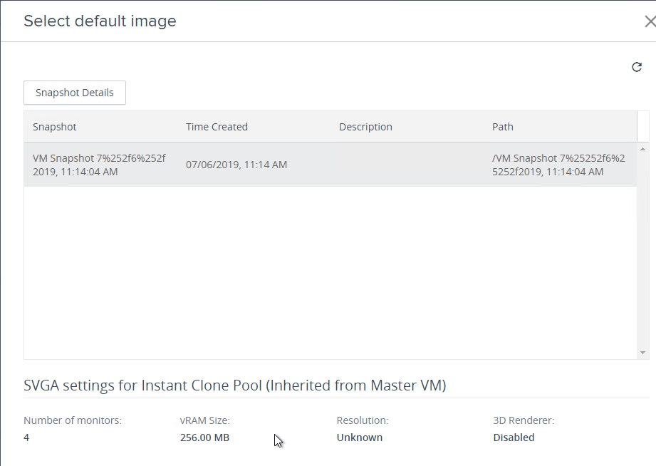
- Scroll down for more settings.
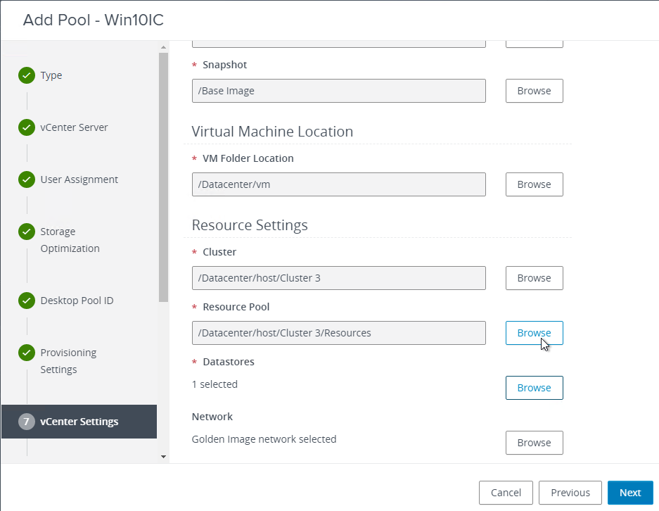
- VM Folder Location - Horizon will create a folder under the location (e.g., datacenter) you choose. Make sure the folder names don't have any spaces in them.
- Datastores – select one or more datastores on which the virtual desktops will be placed.
- If you selected to put Replica on a different datastore, then you'll have another Browse button for Replica disk datastores.
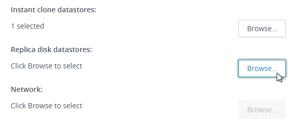
- When selecting Networks, you can use the Network from the parent image, or uncheck the box and select a different network.
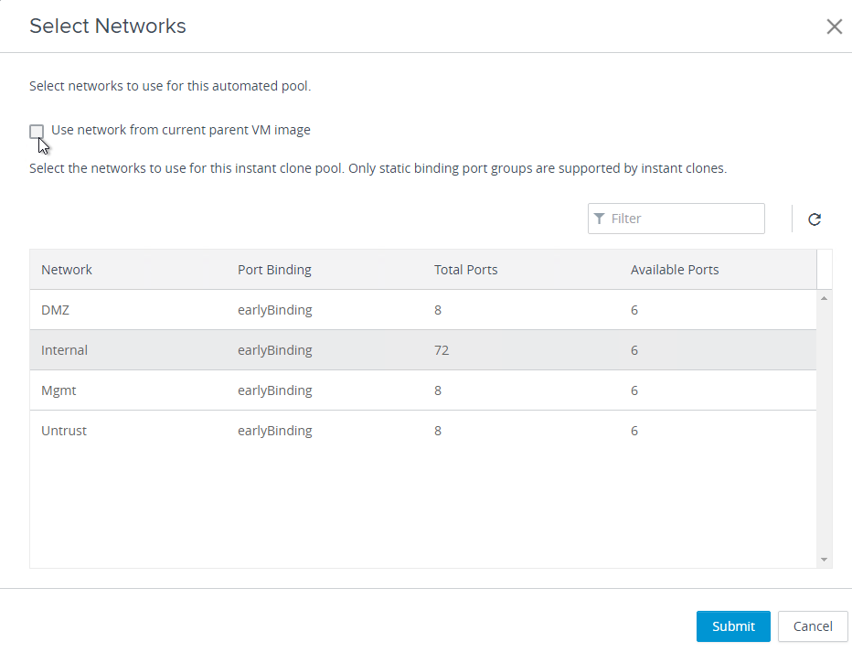
- If the Golden Image VM (aka Parent VM or Master VM) is not showing up in the list, then check the box next to Show all parent VMs and click the … next to the VM to see the issue.
- In Horizon 2206 and newer, in the VM Compute Profile Settings section, you can change the CPU, RAM, and Cores per socket assigned to each new virtual desktop.
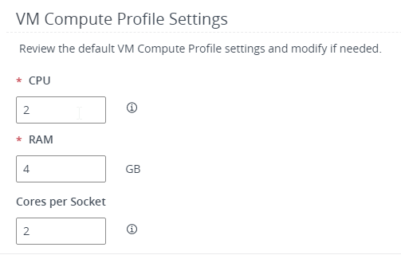
- Click Next when done.
- In the Desktop Pool Settings page:
- Horizon 2103 (8.2) and newer let you Specify Names Manually instead of using a naming pattern.
-
You can select a Category Folder where the published icon will be placed on the client’s Start Menu and/or Desktop.
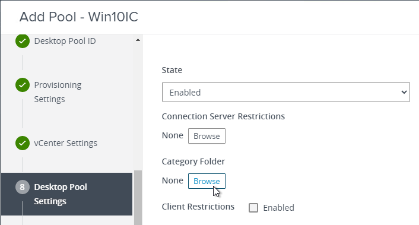
- Change the selection to Select a category folder from the folder list.
- You can type in a new category, or select an existing one.
- Then click Submit.
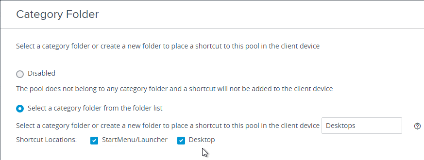
- In the Desktop Pool Settings page, Horizon Enterprise Edition lets you select a Session Type, which means you can optionally publish applications from virtual desktops.
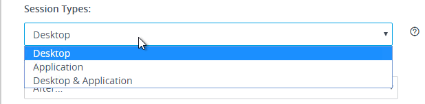
- Change the selection for Logoff after disconnect to After, and specify a disconnect timer.
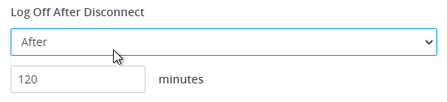
- You can also use Group Policy to configure this. The GPO overrides the pool setting. Install the Horizon GPO Templates if you haven't already. Edit a GPO that applies to the Horizon Agents. Find the Disconnect Session Time Limit (VDI) setting at VMware View Agent Configuration > Agent Configuration.
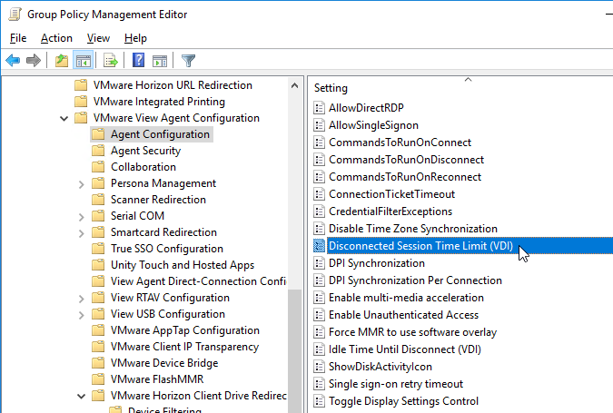
- Horizon also has an Idle Time Until Disconnect (VDI) for virtual desktops. Note: RDSH idle timer is configured using Microsoft RDSH GPO settings, not Horizon GPO settings.
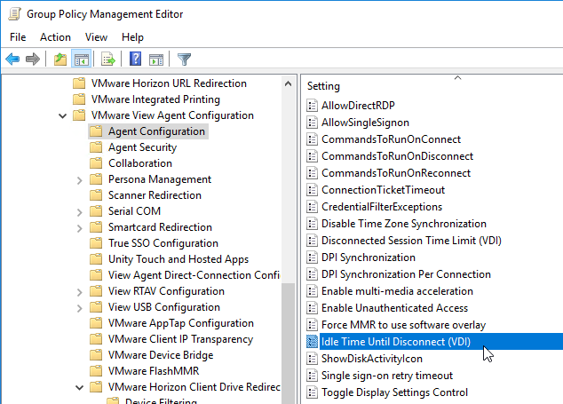
- You can also use Group Policy to configure this. The GPO overrides the pool setting. Install the Horizon GPO Templates if you haven't already. Edit a GPO that applies to the Horizon Agents. Find the Disconnect Session Time Limit (VDI) setting at VMware View Agent Configuration > Agent Configuration.
- You can allow users to restart their machines.
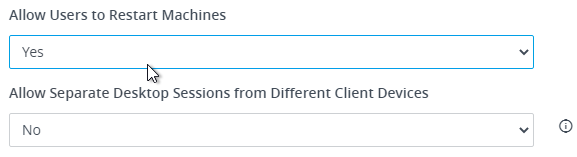
- If you choose Dedicated assignment instead of Floating assignment, there's an option for Refresh OS disk after logoff. Leaving it set to Always is strongly recommended. The other options cause the delta disk to grow, and will cause data loss surprise for the users when you later push a new image. Instant Clones floating assignment pools always refresh on logoff.
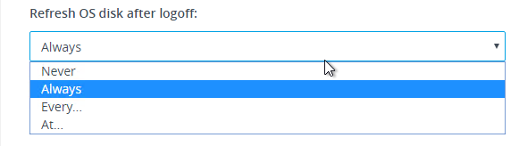
- Reclaim VM disk space is also an option for Dedicated assignment pools. Floating assignment pools always refresh on logoff so there's no need to reclaim disk space.
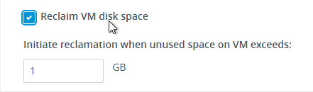
- Click Next.
-
In the Remote Display Settings page:
-
In 3D Renderer, there's an option for NVIDIA GRID VGPU if you have GPUs installed.
- There's an Allow Session Collaboration checkbox, which adds a VMware Horizon Collaboration icon in the system tray of the remote desktop, which lets you invite users to collaborate. See Session Collaboration for details.
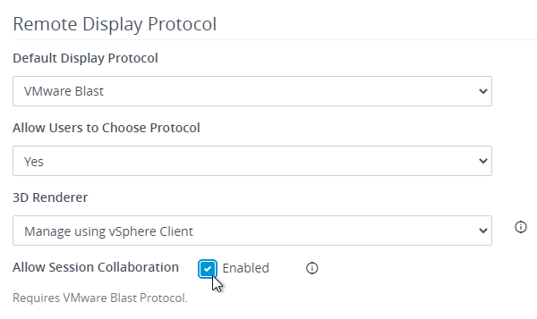
- Click Next.
-
In the Guest Customization page,
-
Next to AD container, click Browse, and select the OU where virtual desktop computer objects will be placed. You can type (paste) into the AD container field.
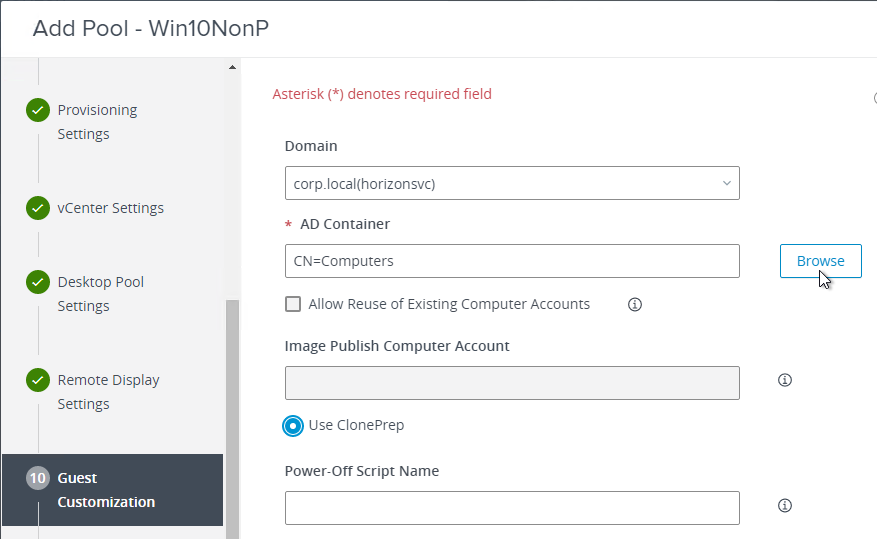
- Consider checking the box next to Allow reuse of pre-existing computer accounts.
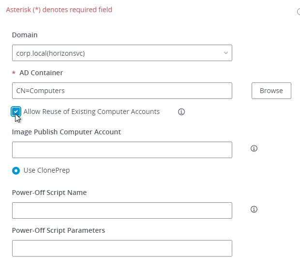
- Click Next.
- In the Ready to Complete page, you may entitle users now, or leave it unchecked and do it later. Click Submit.
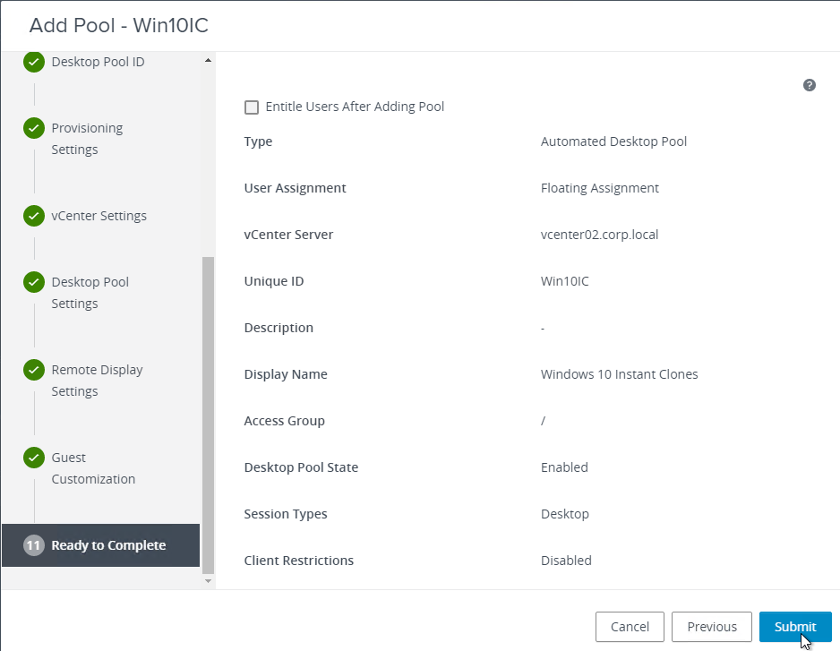
If you opted to add entitlements now:
- In the Add Entitlements window, click Add.
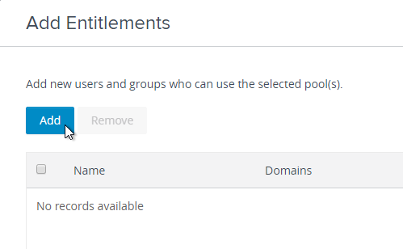
- Find a group that will have permission to log into these desktops, and click OK.
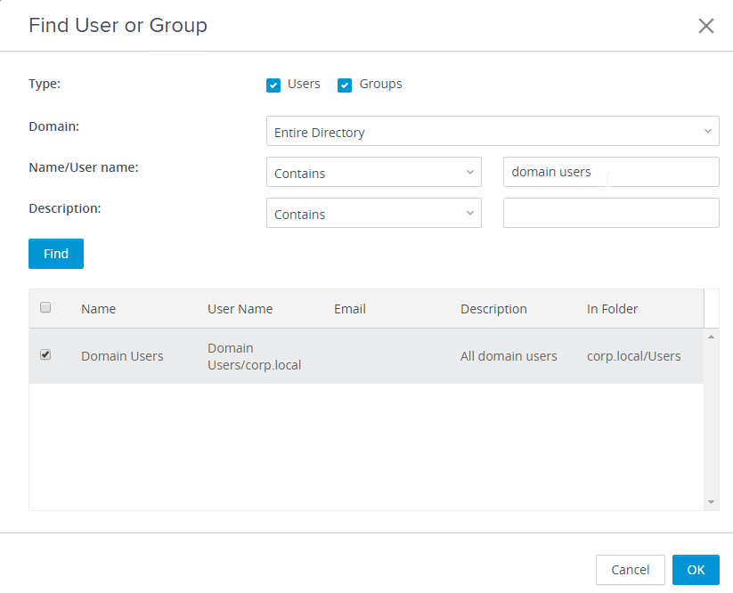
- Then click OK.
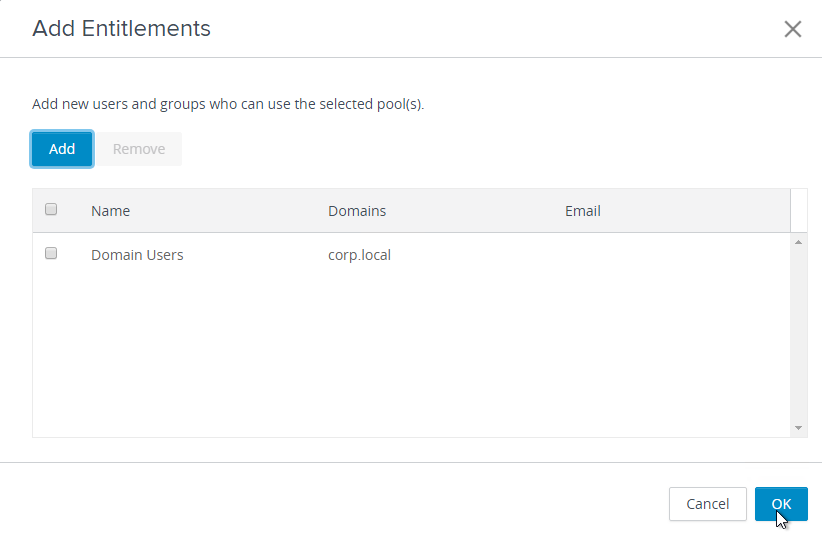
To check the status of the virtual desktops:
- Go to Inventory > Desktops.
- You might have to click the refresh icon on the top right to see the new pool.
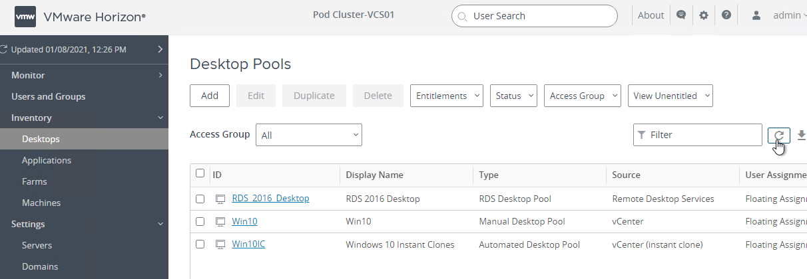
- Click the link for the pool name.
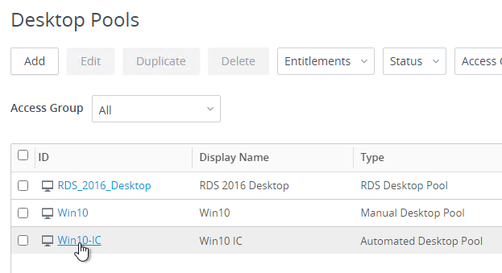
- On the Summary page, if you scroll down, the vCenter Server section has a State field where you can see the status of the pool creation process. It takes several minutes to publish the master image snapshot. After the snapshot is copied to the Replica, vSphere creates a digest file for View Storage Accelerator, which takes a few more minutes.
- Horizon Console has a Pending Image progress bar that doesn't update automatically. To refresh it, scroll up and click the refresh icon.
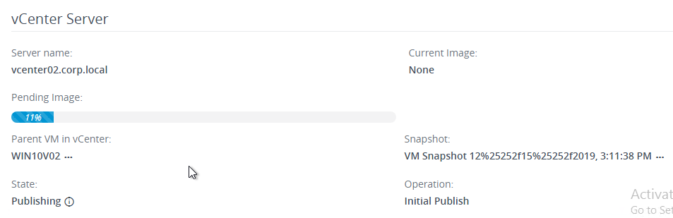
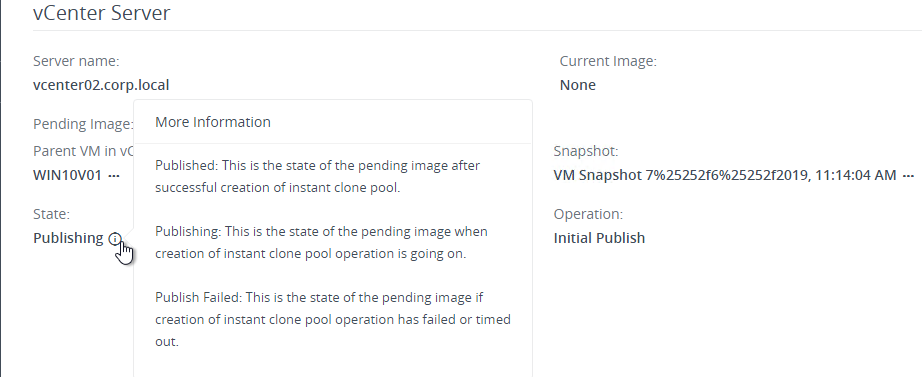
- You can watch the progress in vSphere Client's Recent Tasks list. In high-density pools, Instant Clones are forked from the cp-parent machine. In low-density pools, Instant Clones are cloned from the cp-replica.
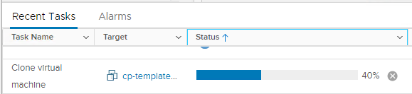
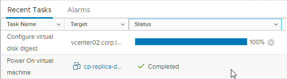
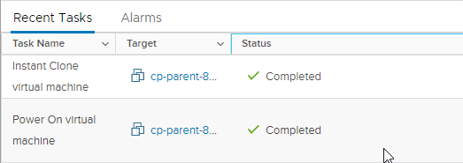
- Eventually the pool's tabs named Machines and Machines (InstantClone Details) will show the new machines.
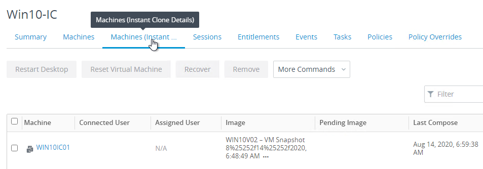
- iccleanup.cmd can show you (list) the structure of the Instant Clones. For higher-density pools, there is a cp-parent at the bottom of the hierarchy. For Smart Provisioning of lower-density pools, there is no cp-parent.
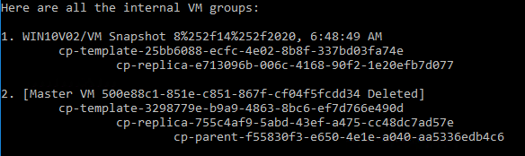
If you wish to automate the creation of the pool, Aresh Sarkari at Automating Desktop Pool creation using PowerCLI – VMware Horizon 7.x explains New-HVPool -spec 'C:\temp\DesktopPool\LinkedClone.json' and the contents of the JSON file.
Entitle Virtual Desktops
To make a pool accessible by a user, it must be entitled.
- In Horizon Console, go to Inventory > Desktops.
- Click the link for a pool name.

- Switch to the Entitlements tab to see the existing entitlements.
- Click Add entitlements.
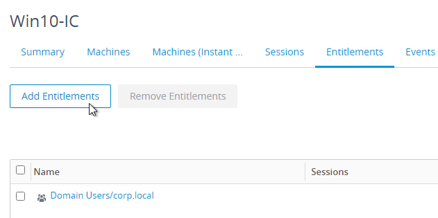
- In the Add Entitlements window, click Add.
- Find a group that will have permission to log into these desktops, and click OK.
- Then click OK.
Add Machine to Pool
- In Horizon Console, on the left, expand Inventory, and click Desktops.
- On the right, click the link for an existing Desktop Pool.
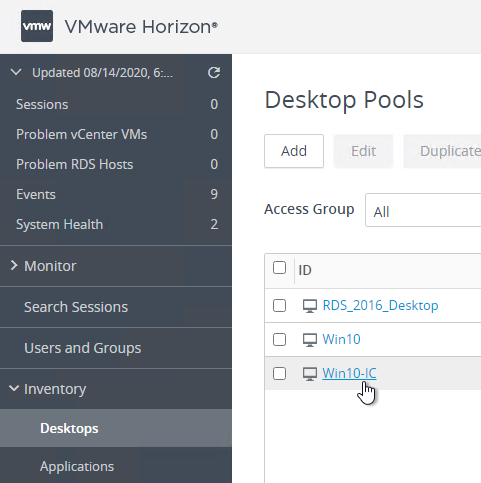
- At the top, click Edit.
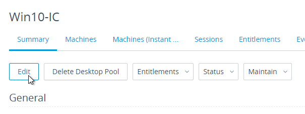
- Switch to the Provisioning Settings tab, scroll down, and change the Max number of machines. Then click OK.
- With Instant Clones, this won't take very long. In high-density pools, the new machine is forked from the cp-parent. In low-density pools, the new machine is cloned from the cp-replica.
- If you open the pool, the tabs named Machines and Machines (InstantClone Details) show the new machines.
Update a Pool
Master Image Preparation
- Power on the master/parent virtual desktop.
- After making your changes, shut down the master virtual desktop.
- Right-click the virtual machine and take snapshot. You must create a new snapshot.
- You’ll need to periodically delete the older snapshots. Right-click the master VM, and click Manage Snapshots.
- Delete one or more of the snapshots.
- In Horizon Console, go to Inventory > Desktops.
- Click the link for a pool name.
- On the Summary tab, click Maintain, and then click Schedule.
- In the Image page, select the new snapshot. Notice the snapshot's monitor/resolution settings. Click Next.
- In the Scheduling page, decide when to apply this new image. If you select Force users to log off, notice you can customize the logoff message in Global Settings. Click Next.
- In the Ready to Complete page, click Finish.
- The pool's Summary tab, near the bottom, indicates that the image is being pushed.
- You can click the tab named Machines (InstantClone Details) to check on the status of the push task. Notice the Pending Image.
- The snapshot is copied to each datastore.
- The snapshot is attached to a Replica, powered on, then powered off. Digest is then computed.
- Then the Replica is attached to a parent, and the parent is powered on. This all takes a bit of time. But the existing Instant Clones remain accessible until the Replica preparation is complete.
- Once Replicas are prepared, each machine is rebooted once.
- Eventually the Pending Image field will be cleared and the desktops are available again.

Host Maintenance - Instant Clones
Horizon 2012 (8.1) and newer have an option to Disable ParentVMs so vSphere Update Manager can put the hosts into maintenance mode. This uses the parentless Smart Provisioning technology. Find the option at Settings > Servers, select a vCenter server, click the More menu, and select Disable ParentVMs.
ESXi hosts running Instant Clones can be placed into maintenance mode without any special instructions.
Instant-Clone Maintenance Utilities at Omnissa Docs:
- IcCleanup.cmd - use this utility to unprotect and delete some or all of the internal VMs created by instant clones. This is the easiest method of cleaning up Instant Clone internal machines.
- IcUnprotect.cmd - use this utility to unprotect folders and VMs, delete VMs, and detect VMs whose master image or snapshot is deleted.
- IcMaint.cmd - This command deletes the master images, which are the parent VMs in vCenter Server, from the ESXi host, so that the host can be put into maintenance mode. This utility generally isn't needed. Also see Omnissa 2144808 Entering and exiting maintenance mode for an ESXi host that has Horizon instant clones.
Persistent Full Clones - Automated
Horizon can clone your Template machine to a specified number of Full Clones. Once Full Clones are created, you'll need a Software Deployment tool, like Microsoft SCCM, to manage the Full Clones.
Customization Specification
Horizon uses a Customization Specification to specialize each machine cloned from the template:
- In vSphere Client, open the Menu and click Policies and Profiles.
- Make sure you have a Customization Specification with the settings detailed in the next few steps. You can create a new Customization Specification.
- In the Computer name page, set it to Use the virtual machine name.
- In the Windows license page, you can optionally set it to Include server license information but change it to Per seat.
- In the Network page, make sure the networks are set to DHCP. Once the machines are created you can manually set them to Static or configure DHCP reservations.
- In the Workgroup or domain page, enter credentials to join the new Full Clones to the domain.
Gold Image Template
- On the gold image machine, in sysdm.cpl > Advanced > User Profiles > Settings, make sure there are no local profiles other than your administrator profile and the Default Profile. Delete all others. Sysprep frequently fails if there is more than one profile on the template.
- If you have SCCM Client installed on your Gold Image, then see Prepare the client computer for imaging.
- Shut down the Gold Image.
- Right-click the gold image, expand Template, and then click Convert to Template.
-
Before creating a pool, test deploying a new machine from the template to make sure SysPrep is successful.
- Right-click the Template and click New VM from This Template.
- In the Select clone options page, check the boxes next to Customize the operating system and Power on virtual machine after creation.
- In the Customize guest OS page, select the Customization Specification you created earlier.
- If cloning fails, then see Broadcom 2001932 Locations of sysprep log files. Store apps (aka UWP apps) are a frequent cause of SysPrep failures. You can convert your Template back to a Virtual Machine, power it on, fix the problem, power it off, and then convert it to a Template again.
- Right-click the Template and click New VM from This Template.
Automated Full Clone Pool
- In Horizon Console, in the left menu, expand Inventory and then click Desktops.
- On the right, click Add.
- In the Type page, select Automated Desktop Pool and click Next.
- In the vCenter Server page, select Full Virtual Machines. Select your vCenter Server and then click Next.
- In the User Assignment page, you usually want Dedicated assignment.
- Automatic Assignment is an optional feature that avoids you having to manually assign users to each full clone desktop. But manual assignments give you more control over capacity planning. Click Next.
- In the Storage Optimization page, click Next.
- In the Desktop Pool Identification page, give the pool an ID (no spaces) and a Display Name that is shown to users. Horizon creates a vCenter virtual machine folder with the same name as the ID. Click Next.
- In the Provisioning Settings page, specify a Naming Pattern. You can hover your mouse over the information icon to see the syntax. Then scroll down.
- After scrolling down, specify the number of machines to create. If you specify All Machines Up-Front, then Horizon will create the Maximum Machines. If you specify Spare (Powered On) Machines, then Horizon will try to preserve this specified number of unassigned machines. Click Next.
- In the vCenter Settings page, click Browse next to Template and select the template you created earlier.
- Click Browse next to the other fields and specify where you want the new machines to be created. Make sure VM Folder Location doesn't have any spaces in it. Click Next.
- In the Desktop Pool Settings page, these settings are the same as Instant Clones, but Remote Machine Power Policy might be different. Scroll down.
- After scrolling down, notice the option for Show Assigned Machine Name instead of the pool name. Hover your mouse over the information icons. Click Next when done.
- In the Remote Display Settings page, specify video settings and then click Next. Horizon 2106 (8.3) and newer let you choose 5K and 8K monitors for Blast only.
- In the Advanced Storage Options page, note that View Storage Accelerator is just a read cache (no write caching). If your storage can handle the reads then enabling this feature probably isn't necessary. Click Next.
- In the Guest Customization page, select the Customization Specification that you created earlier. Consider checking the box next to Allow Reuse of Existing Computer Accounts.
- Horizon 2212 (8.8) and newer let you specify the OU for the new machines. Otherwise, they are created in the Computers container unless you pre-create the computer accounts in your desired OU. Click Next.
- In the Ready to Complete page, you can optionally Entitle users After Adding Pool. Click Submit. Note: users must both be entitled to the pool and assigned to an individual machine.
Machine Administration
- Cloning progress - Use vSphere Client Recent Tasks to watch the progress of the cloning. It will take time for the cloning to complete plus time for SysPrep to complete.
- If you click the Pool name link and then switch to the Machines tab, you should eventually see the new machines.
- Assign User to Machine - You can select a machine, click the drop-down for More Commands, and then Assign User.
-
Machine alias - By default, the pool's Display name is displayed to each user. You can instead change it to the individual Machine Name, or to an administrator-specified machine alias.
- Go to the pool's Summary tab and click Edit.
- Switch to the tab named Desktop Pool Settings.
- Scroll down and find the checkboxes for Show Assigned Machine Name and Show Machine Alias Name. If you select Alias Name, then an additional command appears on the Machines page.
- After editing the pool and enabling Show Machine Alias Name, On the Machines tab, select a machine, and then click the drop-down for Update Machine Aliases. The Alias is shown to the user instead of the pool's Display Name or the actual machine name.
-
Add Machines - To create more Full Clone machines from the same template:
-
Click the name (link) of the pool.
- On the Summary tab, click Edit.
- On the Provisioning Settings tab, scroll down and enter a larger Maximum Machines.
- Update Template - If you plan to create more Full Clone machines in the next few months, then you should update your Template by converting it to a virtual machine, update the virtual machine, and then convert it back to a Template. Note that the updated Template only applies to new Full Clones and has no effect on existing Full Clones. To update existing Full Clones, use a Software Deployment tool like Microsoft SCCM.
Related Pages
- Back to Omnissa Horizon 8